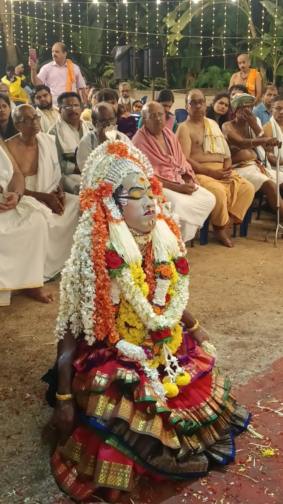

Dhaiva
Our Family Tradition & Belief

About Karluti Amma
The Sacred Story of Karluti Amma. A story of pain, purity, courage, and divine justice
In our Tulunadu, Karluti Amma, more widely known as Kallurti, is not worshipped merely as a daiva of ritual. She is worshipped as a living force of truth, honour, protection, and justice. Along with her brother Kalkuda, she holds a very special and powerful place in the hearts of devotees.
Their story is not an ordinary story. It is a story born from human suffering, injustice, insult, and finally divine transformation.
Born in hardship, not in comfort. Karluti and Kalkuda were born into a humble artisan family. They were not born into wealth, status, or comfort. From early life itself, they experienced struggle, pain, and the harsh side of the world. Their father was known for craftsmanship, and Kalkuda too inherited extraordinary talent. He was said to possess rare skill and brilliance in artistic work. Karluti Amma, on the other hand, was not just his sister in blood, but his strength, his companion in suffering, and his silent pillar through hardship. But the world does not always honour talent.Very often, greatness attracts jealousy, and truth disturbs pride.
When innocence is wronged As their lives unfolded, the brother and sister had to face insult, cruelty, and injustice. Different elders narrate the story in slightly different ways, but the heart of the story remains the same:
they were innocent, yet they suffered. they had dignity, yet they were humiliated. they had truth, yet the world failed them.
p> This is what makes their story so powerful. Karluti Amma’s story reminds us that the pain of the truthful does not go unseen forever. Even if the world is silent for some time, dharma is never blind. 🌺 Karluti Amma – the fierce strength of feminine dignity Karluti Amma is not remembered as a weak or helpless figure. She is remembered as a fierce shakti. She represents: the dignity of a woman the honour of a family the strength to endure suffering the fire that rises against injustice the protection that comes from truth That is why devotees bow to Karluti Amma with such reverence. She is not only a sister in the story. She is Shakti in awakened form. She knows what pain is. She knows what insult is. She knows what injustice feels like. And that is exactly why devotees believe she protects those who come with sincerity and clean hearts. ⚖️ From human pain to divine power The greatness of this story is this: Karluti and Kalkuda did not remain only as victims of suffering. Their pain did not disappear into darkness. Their truth did not die. Their honour did not get buried. Instead, their suffering became divine strength. That is why they are worshipped today as daivas. Not because they lived easy lives, but because they turned suffering into sacred power. This is the deepest message of Karluti Amma’s story: What is wounded in the human world can rise in the divine world. What is insulted on earth can return as justice. What is suppressed by arrogance can become eternal truth. 🙏 Why devotees still pray to Karluti Amma Even today, families pray to Karluti Amma for: rakshane of the home peace and dignity in family life justice in times of difficulty strength during suffering protection from falsehood and arrogance blessings to remain on the side of truth Devotees believe that Karluti Amma does not stand with ego, pride, or deceit. She stands with satya, maryade, and bhakti. That is why her worship is not just ritual. It is remembrance. It is surrender. It is a prayer that our family may always live with dignity, truth, and protection. ✨ What Karluti Amma teaches us Karluti Amma’s story teaches us that: Truth may bend, but it will not break Injustice may rise, but it will not win forever A woman’s dignity is sacred Pain can become power The divine always remembers what the world forgets Karluti Amma is not only a daiva of power. She is a daiva of truth, dignity, justice, and protection. May her grace always protect our family, guide our words, guard our honour, and keep us on the path of satya and bhakti. 🙏